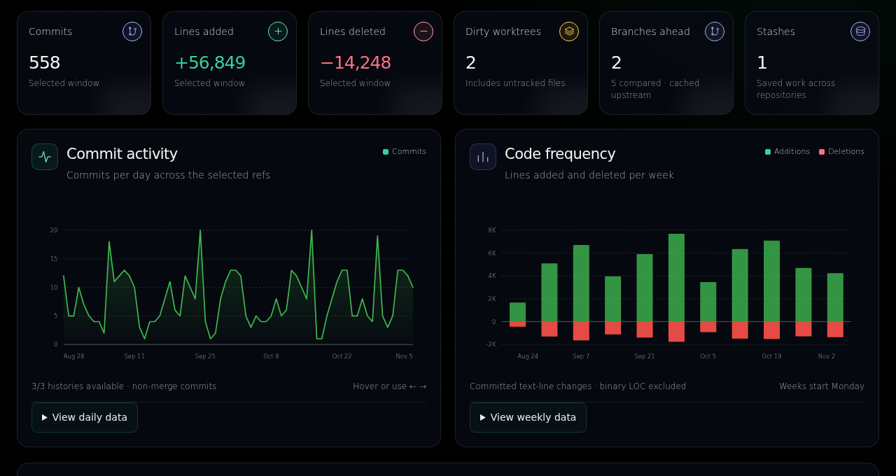

<!doctype html>
<html lang="en">
<meta charset="utf-8">
<meta name="viewport" content="width=1280,initial-scale=1">
<title>CommitandSee social preview</title>
<style>
*{box-sizing:border-box}html,body{margin:0;width:1280px;height:640px;overflow:hidden}
body{font-family:Arial,Helvetica,sans-serif;color:#f5f7fa;background:#03080d}
main{position:relative;width:1280px;height:640px;padding:52px 58px;overflow:hidden;background:#03080d}
.copy{position:relative;z-index:2;width:488px}.brand{display:flex;gap:15px;align-items:center;font-size:35px;font-weight:700;letter-spacing:-1px;color:#f5f7fa}.mark{width:42px;height:42px;color:#34d399}
h1{font-size:61px;letter-spacing:-2.4px;line-height:1.03;font-weight:700;margin:64px 0 25px;color:#f5f7fa}h1 span{color:#51e0ad}
.sub{color:#aebbbd;font-size:22px;line-height:1.5;max-width:410px;margin:0}
.footer{position:absolute;left:60px;bottom:44px;color:#bdc9cc;font-size:17px;letter-spacing:.2px}.footer b{color:#51e0ad;font-weight:500;margin-right:13px}
.frame{position:absolute;left:565px;top:156px;width:670px;height:390px;border:1px solid #59716b80;border-radius:14px;overflow:hidden;background:#080d15;transform:rotate(-2deg)}
.chrome{height:35px;border-bottom:1px solid #ffffff12;display:flex;align-items:center;justify-content:space-between;padding:10px 15px;color:#d4e4e0;font-size:11px;background:#101b20}.dots{display:flex;gap:5px}.dots i{display:block;width:6px;height:6px;border-radius:50%;background:#4a625e}.demo{color:#6ee7b7;letter-spacing:.7px;font-size:11px;font-weight:bold}.frame img{display:block;width:670px;height:auto}
.caption{position:absolute;left:592px;bottom:39px;color:#92aca5;font-size:13px;letter-spacing:.2px}
</style>
<main aria-label="CommitandSee: see the work GitHub cannot see. Synthetic demo dashboard.">
  <div class="copy">
    <div class="brand"><svg class="mark" viewBox="0 0 42 42" fill="none" aria-hidden="true"><path d="M11 9v24M11 25c0-12 20-4 20-16" stroke="currentColor" stroke-width="2.5"/><circle cx="11" cy="8" r="4" fill="#03080d" stroke="currentColor" stroke-width="2.5"/><circle cx="11" cy="34" r="4" fill="#03080d" stroke="currentColor" stroke-width="2.5"/><circle cx="31" cy="8" r="4" fill="#03080d" stroke="currentColor" stroke-width="2.5"/></svg>CommitandSee</div>
    <h1>See the work<br>GitHub <span>can't<br>see.</span></h1>
    <p class="sub">Uncommitted changes. Worktrees.<br>Branches and stashes. In one view.</p>
  </div>
  <div class="frame"><div class="chrome"><span class="dots"><i></i><i></i><i></i></span><span>Local Git dashboard</span><span class="demo">SYNTHETIC DEMO</span></div></div>
  <div class="footer"><b>LOCAL-FIRST</b> Python + Git · MIT licensed</div>
  <div class="caption">Actual interface · Synthetic demo data</div>
</main>
</html>
